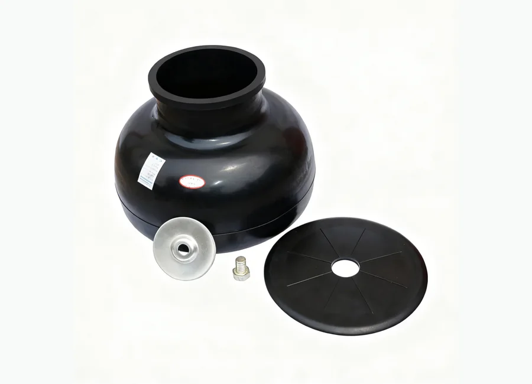

How to Request a Quotation
- Send part number or equipment model.
- Attach product photo or technical drawing if available.
- We will check compatibility and prepare quotation details.
Mud Pumps and Spare Parts
Mud Pumps and Spare Parts. KB75 KB45 Pulsation Dampener Diaphragm for oilfield equipment maintenance and replacement projects. Buyers can send part number, equipment model, product photo or technical drawing for quotation.

KB75 KB45 Pulsation Dampener Diaphragm for oilfield equipment maintenance and replacement projects. Buyers can send part number, equipment model, product photo or technical drawing for quotation.
Specification matching, export packaging, WhatsApp and email communication support for oilfield buyers.
Description
Images marked as description materials are placed here and are not used as the product card thumbnail.
No description image has been uploaded for this product yet.
Specifications
If the original product folder includes a model or specification table, it is displayed here for product selection and quotation support.
| Drawing No. | Name | Drawing No. | Name | Drawing No. | Name | |
|---|---|---|---|---|---|---|
| GH3161-03.01(G) | 键 | GH3161-04.01(G) | 十字头 (Crosshead) | GH3161-05.01.00(G) | 液缸总成 (Cylinder assembly) | |
| GH3161-03.02(G) | 小齿轮轴 (Pinion shaft) | GH3161-04.02(G) | 上导板 (Upper guide plate) | GH3161-05.02(G) | 缸盖法兰 (Cylinder cover flange) | |
| GH3161-03.03(G) | 耐磨套 (Wear-resistant sleeve) | GH3161-04.03.00(G) | 垫片组 (Shim set) | GH3161-05.03(G) | 缸盖 (Cylinder cover) | |
| GH3161-03.04(G) | 端盖 (Cover) | GH3161-04.04(G) | 调整垫片 (Adjusting shims) | GH3161-05.04.00(G) | 插板总成 (Plug assembly) | |
| GH3161-03.05(G) | 密封垫圈 (Seal) | GH3161-04.05(G) | 填料盒 (Packing gland) | GH3161-05.05.00(G) | 阀杆导向器 (下) (Lower valve stem guide) | |
| GH3161-03.06(G) | 密封垫圈 (Seal) | GH3161-04.06(G) | 油封环 (Oil seal ring) | GH3161-05.06.00(G) | 缸盖堵头 (Cylinder cover plug) | |
| GH3161-03.07(G) | 轴承套 (Bearing cup) | GB/T3452.1-1992 | O 形圈 (O-ring:190×3.55G) | GH3161-05.07(G) | 定位盘 (Locating disc) | |
| GH3161-03.08(G) | 挡圈 (Retaining ring) | GH3161-04.07(G) | 双唇油封 (Double-lip seal:5"×6.25"×0.625") | GH3161-05.08(G) | 缸盖密封圈 (Cylinder cover seal) | |
| GH3161-03.09(G) | 密封垫圈 (Seal) | GH3161-04.08(G) | 密封垫圈 | GH3161-05.09(G) | 排出管路 (Discharge line) | |
| GH3161-03.10.00(G) | 集油盒 (Oil collector) | GH3161-04.09(G) | 端盖 (Cover) | GH3161-05.10(G) | 阀弹簧 (Valve Component) | |
| GH3161-27.01(G) | 密封垫环 (Seal:R39) | GH3161-04.10(G) | 锁紧弹簧 (Lock spring) | GB/T3452.1-1992 | O 形圈 (O-ring:95×5.3G) | |
| GH3161-27.02(G) | 底塞 (Plug) | GH3161-04.11(G) | 挡泥板 (Mud guard) | GH3161-05.11.00(G) | 阀总成 (Valve assembly) | |
| GH3161-27.03.00(G) | 气囊 (Diaphragm) | GH3161-04.12(G) | 中间拉杆 (Tension rod) | GH3161-05.12(G) | 阀盖密封圈 (Valve cover seal ring) | |
| GH3161-27.04.00(G) | 外壳总成 (Housing assembly) | GH3161-04.13(G) | 十字头销 (Crosshead pin) | GH3161-05.13(G) | 阀盖 (Cover Component) | |
| GH3161-27.05(G) | 盖 (Cover) | GB/T3452.1-1992 | O 形圈 (O-ring:125×7.0G) | GH3161-05.14(G) | 缸套密封圈 (Liner seal ring) | |
| GH3161-27.06(G) | 三通 (Tee:NPT1/4) | GB/T70-1985 | 螺钉 (Screw:M20×65) | GH3161-05.15(G) | 耐磨盘 | |
| GH3161-27.07(G) | 接头 (Fitting:NPT1/4) | GH3161-04.14(G) | 密封垫 (Seal) | GH3161-05.16(G) | 缸套法兰 (Liner flange) | |
| GH3161-27.08.00(G) | 压力表罩总成 (Pressure gauge cover assembly) | GB/T3452.1-1992 | O 形圈 (O-ring:160×7.0G) | GH3161-05.17.00(G) | 缸套压盖 (Liner cover) | |
| GH3161-27.09.00(G) | 排气阀 (Air release valve) | GH3161-04.15(G) | 下导板 (Lower guide plate) | GH3161-05.18(G) | 活塞杆 (Piston rod) | |
| Y-60 | 双刻度抗震压力表 (Shock-resistant pressure gauge:0~25MPa (0~3630psi)) | GH3161-04.16(G) | 十字头销挡板 (Crosshead pin guard) | GH3161-05.19.00(G) | 喷淋管总成 (Spray pipe assembly) | |
| JZR3-L8 | 角式截止阀 (Shut-off valve，奉化市新华液压件厂) | GH3161-04.17(G) | 十字头轴承 (Crosshead bearing:254941QU) | GB/T3452.1-1992 | O 形圈 (O-ring:200×7.0G) | |
| GH3161-27.10(G) | 垫圈 (Washer) | GH3161-05.41.00(G) | 弹簧导向 | GH3161-05.39(G) | 排出口堵板 (Discharge blanking plate:5") | |
| GH3161-05.20(G) | 缸套锁紧环 (Liner retaining ring) | GB/T5782-1986 | 螺栓 (Bolt:M22×60) | GH3161-05.01.06(G) | 螺母 (Nut:M39×3-6H (SPL)) | |
| GH3161-05.21(G)、GH3161-05.21A(G) | 双金属缸套 (Bi-metal liner)、普通缸套 (Standard liner) | GH3161-05.25.00(G) | 吸入管路 (Suction pipe) | GH3161-05.29(G) | 挡板 | |
| GH3161-05.22.00(G) | 卡箍总成 (Rod clamp assembly) | GH3161-05.26.00(G) | 垫片组 (Shim set) | GH3161-05.30(G) | 螺栓 (Bolt:M10-6g×20) | |
| GH3161-05.23(G) | 缸套端盖 (Liner cover) | GH3161-05.27(G) | 阀杆导向器 (上) (Upper valve stem guide) | GH3161-05.31(G) | 活塞密封圈 (Piston seal) | |
| GH3161-05.24.00(G) | 活塞 (Piston) | GH3161-05.28(G) | 双头螺栓 | GH3161-05.32.00(G) | 活塞螺母 (Piston nut) | |
| GB/T3452.1-1992 | O 形圈 (O-ring:190×7.0G) | GB/T3452.1-1992 | O 形圈 (O-ring:345×7.0G) | GH3161-05.35(G) | 吸入法兰 (Ⅱ) (Suction flange (Ⅱ)) | |
| GH3161-05.33.00(G) | 吸入空气包 (Suction air bag) | GH3161-05.34(G) | 吸入法兰 (Ⅰ) (Suction flange (Ⅰ)) | GB/T6170-1986 | 螺母 (Nut:M27) | |
| Drawing No. | Name | |||||
| GH3161-27.01(G) | 密封垫环 (Seal:R39) | |||||
| GH3161-27.02(G) | 底塞 (Plug) | |||||
| GH3161-27.03.00(G) | 气囊 (Diaphragm) | |||||
| GH3161-27.04.00(G) | 外壳总成 (Housing assembly) | |||||
| GH3161-27.05(G) | 盖 (Cover) | |||||
| GH3161-27.06(G) | 三通 (Tee:NPT1/4) | |||||
| GH3161-27.07(G) | 接头 (Fitting:NPT1/4) | |||||
| GH3161-27.08.00(G) | 压力表罩总成 (Pressure gauge cover assembly) | |||||
| GH3161-27.09.00(G) | 排气阀 (Air release valve) | |||||
| Y-60 | 双刻度抗震压力表 (Shock-resistant pressure gauge:0~25MPa (0~3630psi)) | |||||
| JZR3-L8 | 角式截止阀 (Shut-off valve，奉化市新华液压件厂) | |||||
| GH3161-27.10(G) | 垫圈 (Washer) | |||||
| GH3161-27.11.00(G) | 空气包充气软管总成 (Air hose assembly) |
Inquiry
For fast quotation, send part number, pump model, rig model, product photo or technical drawing.